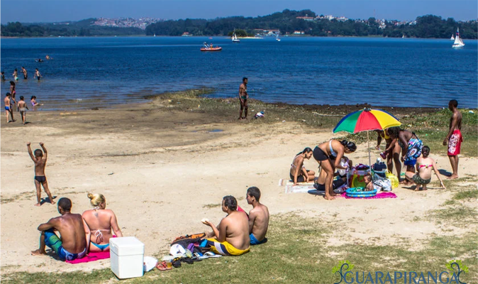
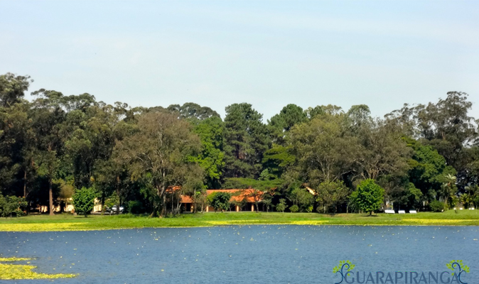
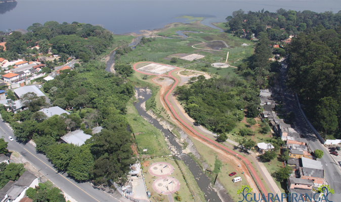
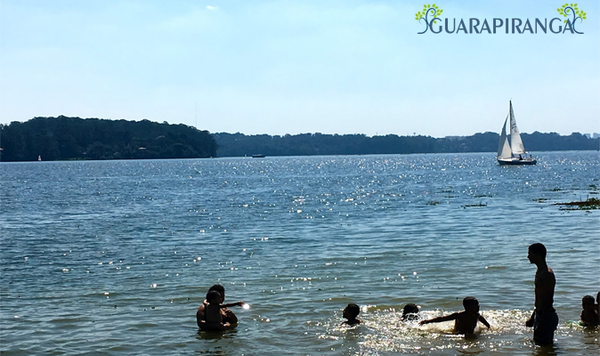
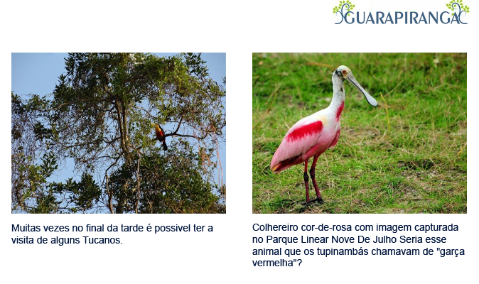

Parque Praia de São Paulo

História Parque Praia de São Paulo
O parque tem 168.700 m² de área destinada a visitação pública no endereço Avenida José Marques do Nascimento, altura do
nº 3.540 da Av. Atlântica e integra o Projeto Orla do Guarapiranga. O Parque Praia São Paulo é voltado para prática de
esportes, lazer e contemplação, com pequenas áreas dedicadas a banhistas.
Apresenta bastante áreas verdes com plantio de árvores nativas, ciclovias, playground infantil e da longevidade, quadras
de areias, tendo também uma quadra de areia oficial para competições e sanitários em certos pontos do parque.
Flora
Grande maioria do parque é composta por gramado, árvores e áreas ajardinadas. Tendo vários tipos de árvores como: palmatória, falsa-seringueira, capixingui, copaíba, romãzeira e muitas outras. Vegetação aquática é composta por gramíneas e maciços de cataia.
Fauna
Tendo cerca de 50 espécies de aves observadas. Dentre as aves: anu-branco, marrecas silvestres, pica-pau-do-campo,
caracará, sabiás e muitas outras. Batuiruçus e maçaricos descansam e alimentam-se nas praias do parque
Dentro do parque existem várias barracas de lanches, facilitando a compra de comida ao redor do parque.
Livre para levar animais de estimação, caso seja bravo, levar em guia e focinheiras.
Ônibus:
Projeto Orla da Guarapiranga
O programa prevê a implantação de parques, ciclovias, passarelas permeáveis e substituição de muros com cercas a
aproximadamente 10 quilômetros das margens da barragem Guarapiranga no bairro do Socorro, no bairro Capela do Socorro e
no bairro Cidade Dutra da sub-região.
O conceito é colocar o governo na vanguarda dos planos para proteger as áreas públicas e os restantes espaços, de
loteamentos clandestinos e degradação ambiental.
Até agora, pouco mais de R$ 10 milhões foram investidos diretamente nas obras do programa, que são executadas pela
Prefeitura de Capela do Socorro, com recursos da Secretaria do Verde e Meio Ambiente, da Prefeitura, da Secretaria
Nacional de Energia e Saneamento. , Sabesp, Fundurb e Banco Mundial, e outros 10 milhões de reais continuarão a investir
em 2010.
Existem 7 parques previstos para este trecho da estrada à beira da barragem de Guarapiranga, todos em áreas alagadas, ou
seja, os parques são maiores na estação seca, cerca de 8 meses por ano, e menores na cheia temporada, cerca de 4 meses
por ano.
De um modo geral, a ideia é agregar novas áreas a esses parques para que nos próximos anos possam ser unidos e
transformados em um único parque ao redor de toda a parte da barragem, resultando na chamada “Praia de São Paulo”.
Fonte da foto Guia da Semana
Parque da Barragem

História Parque da Barragem
Parque da Barragem com seus 88.584 (oitenta e oito mil, quinhentos e oitenta e quatro) m² , é uma excelente opção para
conhecer um pouco da fauna brasileira que vive dentro dele ,A construção do parque Barragem do Guarapiranga foi iniciada
em 2008, assim foi inaugurada em 19 de dezembro de 2010, Sendo utilizado 1 milhão e 400 mil reais na construção do parque.
A área do parque é contornada por ciclovias e calçadas ecologicamente correta assim facilita o passeio e a movimentação
do publico que frequenta o parque.
Também para aproveitar com sua família possuem diversas mesas de xadrez ou damas para quem gosta de jogos de tabuleiros
com lindas vistas para hortas com uma grande variedade de plantas.
Na sua área de lazer você consegue encontrar pistas de caminhada, campo de futebol, playground infantil, playground
(píer) para pescar
Para quem gosta de um pouco de hístoria o parque apresenta um monumento do italiano Otone Zorlini em homenagens aos
Heróis
da Travessia do Atlântico .
Fauna
Em sua fauna é possível encontrar diversas variedades de animais certa de 57 espécies entre aves, mamíferos, répteis e
insetos.
A variedade de Aves é em torto de 25 espécies diferente é uma excelente opção para quem gosta de registrar fotos de
lindas aves, também é possível encontrar duas espécies de roedores como o preá e o ratão do banhado.
Fonte da foto blogspot
Parque São José

História Parque São José
Parque São José com sua área de 94.987 (noventa e quatro mil, novecentos e oitenta e sete) m², ele participa de dois
projetos muito importantes, o projeto de revitalização da Orla da Represa Guarapiranga e o Programa Operação Defesa das
Águas.
Em sua Fauna ele apresenta uma rica variedade de espécies, uma excelente opção para quem gosta de tirar fotos.
Fonte da foto Prefeitura-SP
Parque 9 de Julho

História Parque 9 de Julho
Parque 9 de Julho é o maior parque em volta da represa Guarapiranga com sua área de 537.514 (quinhentos e trinta e sete
mil, quinhentos e catorze) m², Localizado: Av. Ponta do Sol, s/n - Cidade Dutra, São Paulo - SP, 04699-970 Ele foi criado por um decreto na data de 28/04/2008.
Após uma pesquisa com os amigos da universidade, observamos que o parque 9 de julho tinha poucas informações sobre ele.
Apesar de ser um parque urbano, sua localização é dificil, nem o GPS deu conta de indicar o caminho corretamente, poucos
moradores conheciam o local pelo nome. Incluí um mapa indicando o caminho.
Uma pesquisa com os amigos da universidade, observamos que o parque 9 de julho tinha poucas informações sobre o parque.
O parque tem uma área de lazer pequena e fica em uma região urbana.
A localização para chegar ao parque é tão difícil
que nem o GPS consegue encontrar, nem se quer poucos moradores que moram perto da região do parque nem sabem que tinha o
parque 9 de julho.
O parque é bem bonito e a sua plantação e muito viva e encantadora, em si o parque é organizado,
limpo e conta com segurança, possui caminhos cimentados para ter fácil acesso as áreas do parque, não possui mata
fechada e a entrada do parque é gratuita a sua vegetação é dominante aos olhos humanos e aos olhos dos animais. Seu
horário de funcionamento é das 07:00 as 19:00Hs.
O intuito do parque é para passar o dia com a família, passear com seu cachorro e fazer exercícios físicos ao ar livre,
as únicas atividades que não pode fazer no parque é: empinar pipa, pois as linhas causam danos à fauna e também aos
aeromodelos. Lembrando que dentro do parque não conta com mercados ou barracas para a compra de comida, então é sempre
bom levar de casa
Fauna

No parque podemos encontrar logo de início alguns animais como o suiriri pequeno, bicho-de-lacre, primavera,
caminheiro-zumbidor e canário-da-terra, que são aves específicas da nossa fauna. Perto do parque contamos com uma grande
represa, que possui uma vista incrível das cascatas d' água. Lá também podemos observar outros animais como frango d'
água, maria-faceira, carão, gavião-caramujo e entre muitos outros animais.
Bom passeio!
Fonte da fotos blogspot